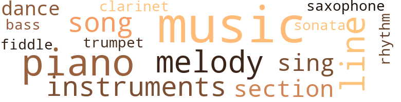
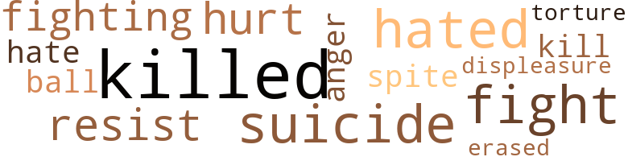

Elastic Fingers, by Verne, Berta (1969)
58 music-related terms matched in this text.
Most frequent terms in this topic: music (16); piano (8); melody (5); lines (4); instruments (4)
bass.n.07
Definition: the member with the lowest range of a family of musical instruments
| word | sentence |
|---|---|
| bass | " The trumpet , saxophone , flute , clarinet , bass fiddle , drums . |
clarinet.n.01
Definition: a single-reed instrument with a straight tube
| word | sentence |
|---|---|
| clarinet | " The trumpet , saxophone , flute , clarinet , bass fiddle , drums . |
cornet.n.01
Definition: a brass musical instrument with a brilliant tone; has a narrow tube and a flared bell and is played by means of valves
| word | sentence |
|---|---|
| trumpet | " The trumpet , saxophone , flute , clarinet , bass fiddle , drums . |
dance.n.01
Definition: an artistic form of nonverbal communication
| word | sentence |
|---|---|
| dances | " I do n't know if Edwin is interested in the modern ball - room dances . " |
dance.n.02
Definition: a party of people assembled for dancing
| word | sentence |
|---|---|
| dance | " You see , I have a dance band called ' The Calypso 8 . ' |
music.n.01
Definition: an artistic form of auditory communication incorporating instrumental or vocal tones in a structured and continuous manner
| word | sentence |
|---|---|
| music | I like the organ music there . |
| music | Had Terry not sent Paul to me to copy my music , I would never have met him . |
| music | When the record was finished he said , " That kind of music bores me . |
| music | I do n't care for classical music . |
| music | I like any kind and all kinds of music . " |
| music | You know that I write music , plays and speeches for others as well as for myself , and that I like to go to impor - tant events . " |
| music | ' Tve been doing this music bit so long it 's old hat to me . |
| music | He , too , was in the music field . |
| music | Every - thing is akin to music . |
| music | Twenty years of abstinence , absorbed in writing music and lecturing . |
| music | " Such beautiful music ! |
| music | I could write music just as easy as I could write a letter . |
| music | I had studied music extensively . |
| music | It was not clear or legible enough to send to a music printer . |
| music | He said that he would like to talk with you again soon , but not about music . |
| music | Paul was saying , " Do n't do any work tonight on music or anything . |
musical_instrument.n.01
Definition: any of various devices or contrivances that can be used to produce musical tones or sounds
| word | sentence |
|---|---|
| instruments | The car has to take all the instruments . |
| instruments | " How interesting , " said I , " what instruments do you use ? " |
| instruments | He apparently was impatient with my ignorance and did n't name all of his instruments . |
| instruments | Some of his men played two instruments . |
piano.n.01
Definition: a keyboard instrument that is played by depressing keys that cause hammers to strike tuned strings and produce sounds
| word | sentence |
|---|---|
| piano | I went to the piano and softly played my latest composi - tion , " Will he be faithful ? " |
| piano | Of course , the piano plus my singer , " he replied . |
| piano | The front section contained a huge divan , four leather club chairs and a beautiful upright piano with a padded chair for a stool . |
| piano | He was to deliver it on Sunday at four P.M. I wanted to hear him but Mr. Gee was taking me to Montclair to be a judge for a piano student 's contest at the same hour . |
| piano | I went to the piano to play the melody and was deeply engrossed in it when the door bell rang . |
| piano | The little miss had often heard my piano . |
| piano | I would love to come in a little and see you play the piano some dme . |
| piano | I only use the piano when com - posing . |
rhythm.n.04
Definition: the arrangement of spoken words alternating stressed and unstressed elements
| word | sentence |
|---|---|
| rhythm | There must be melody , rhythm and harmony . |
sax.n.02
Definition: a single-reed woodwind with a conical bore
| word | sentence |
|---|---|
| saxophone | " The trumpet , saxophone , flute , clarinet , bass fiddle , drums . |
section.n.01
Definition: a self-contained part of a larger composition (written or musical)
| word | sentence |
|---|---|
| section | We were sitting in a smaller rear section of the room . |
| section | The front section contained a huge divan , four leather club chairs and a beautiful upright piano with a padded chair for a stool . |
| section | I had moved to another section of the city to a studio apartment on the east side of New York . |
sing.v.02
Definition: produce tones with the voice
| word | sentence |
|---|---|
| sing | " Does he sing well ? " |
| sing | I 've heard the great Bella Delante sing Calypso . |
| sing | Aunt Vicky used to be an opera singer but she does n't bother to sing any more , after she and the bass singer did n't get married . |
sonata.n.01
Definition: a musical composition of 3 or 4 movements of contrasting forms
| word | sentence |
|---|---|
| sonata | I would make the thesis analo - gous to a sonata . |
song.n.01
Definition: a short musical composition with words
| word | sentence |
|---|---|
| song | I had composed a little song called " Heaven - ly . " |
| songs | I re - ceived considerable royalties from " Heavenly " and other songs . |
| song | " I did n't have any reason to call and then too , I 've been very busy with a new song . |
| song | I went to work on my song " Will He Be Faithful ? " |
tune.n.01
Definition: a succession of notes forming a distinctive sequence
| word | sentence |
|---|---|
| lines | I relieved my tortured mind by writing these lines : O bitter loneliness , morbid thoughts , There is a thirstiness in my being . |
| melody | While writing a melody to " Counting the Hours " I heard a commotion in the corridor . |
| lines | I was so conditioned that I wrote these lines to him : Tell me darling , what is this that binds my soul with its elastic fingers ? |
| line | I decided not to send him this note because he had never written me a line . |
| melody | I wanted to finish the melody to a lovely little sentiment titled , " Why do I think of you ? '' |
| lines | I was not yet sleepy so I went to my desk and wrote these lines : Cover me with kisses , for I am dying of longing , Cover me so that the wind can not carry away your fragrance . |
| lines | I sat down and wrote these lines : My whole being is enveloped in a burning sea of pain . |
| melody | There must be melody , rhythm and harmony . |
| line | The first line ' when I give my heart to him will he be Faithful ? |
| melody | By Tuesday I had the lyrics and the melody well formed in my mind . |
| melody | I went to the piano to play the melody and was deeply engrossed in it when the door bell rang . |
violin.n.01
Definition: bowed stringed instrument that is the highest member of the violin family; this instrument has four strings and a hollow body and an unfretted fingerboard and is played with a bow
| word | sentence |
|---|---|
| fiddle | " The trumpet , saxophone , flute , clarinet , bass fiddle , drums . |
28 violence-related terms matched in this text.
Most frequent terms in this topic: killed (5); suicide (3); hated (3); fight (3); resist (2)
anger.n.01
Definition: a strong emotion; a feeling that is oriented toward some real or supposed grievance
| word | sentence |
|---|---|
| anger | In my teens my ad - mirers were dazzled about my philosophy : be good , above reproach , show no anger , let the other person lead , you fol - low . |
displeasure.n.01
Definition: the feeling of being displeased or annoyed or dissatisfied with someone or something
| word | sentence |
|---|---|
| displeasure | I wanted him to know my displeasure . |
erase.v.01
Definition: remove from memory or existence
| word | sentence |
|---|---|
| erased | I had erased all grief over Harvey and the loss of Matilda . |
fight.n.05
Definition: a boxing or wrestling match
| word | sentence |
|---|---|
| fight | Why fight against your desires ? |
fight.v.02
Definition: fight against or resist strongly
| word | sentence |
|---|---|
| fight | You are still trying to fight the truth . |
| fighting | You are fighting against your own happiness . |
| fight | I lost my will to fight . |
| fighting | I have wanted you since the first time I saw you , but you kept fighting against your inner persuasion . |
hate.v.01
Definition: dislike intensely; feel antipathy or aversion towards
| word | sentence |
|---|---|
| hated | I hated myself because he did n't say it . |
| hated | At first I thought I hated him . |
| hated | How I hated that doorbell ! |
| hate | I hate him ! |
injury.n.01
Definition: any physical damage to the body caused by violence or accident or fracture etc.
| word | sentence |
|---|---|
| hurt | I had gotten over the hurt of long ago . |
kill.v.10
Definition: cause the death of, without intention
| word | sentence |
|---|---|
| killed | " He killed him ! |
| killed | He killed him ! " |
| killed | A jealous husband had killed his wife 's brother because he be - lieved that the brother had kept secret the clandestine meet - ings between his wife and another man , the brother 's friend . |
| killed | He bequeathed a fortune to their child , then lured the mother to their old meeting place , killed her , then killed himself . |
| killed | He bequeathed a fortune to their child , then lured the mother to their old meeting place , killed her , then killed himself . |
| kill | I wanted to kill him . |
malice.n.01
Definition: feeling a need to see others suffer
| word | sentence |
|---|---|
| spite | I know you love me in spite of your - self . |
musket_ball.n.01
Definition: a solid projectile that is shot by a musket
| word | sentence |
|---|---|
| ball | " I do n't know if Edwin is interested in the modern ball - room dances . " |
pain.v.02
Definition: cause emotional anguish or make miserable
| word | sentence |
|---|---|
| hurt | I was hurt and heartsick over the coolness I had been re - ceiving lately from Paul since he took me to see my doctor three weeks before . |
resist.v.04
Definition: withstand the force of something
| word | sentence |
|---|---|
| resist | If he comes again I know that I will not be strong willed enough to resist his advances . |
| resist | Why could n't you resist him ? " |
suicide.n.01
Definition: the act of killing yourself
| word | sentence |
|---|---|
| suicide | The murderer has no faith in himself , neither does the suicide . |
| suicide | A doctor 's secretary had committed suicide , a kidnap - ping case , and the U.N. I gave him " Heavenly " to copy . |
| suicide | Near the back of the paper on the obituary page I saw : " Paul Gee , popular musician a suicide ! " |
torment.v.01
Definition: torment emotionally or mentally
| word | sentence |
|---|---|
| torture | He did n't want to add the slightest mental burden to her physical torture . |
29 religion-related terms matched in this text.
Most frequent terms in this topic: faith (10); church (5); God (4); prayer (3); Church (1)
cathedral.n.02
Definition: the principal Christian church building of a bishop's diocese
| word | sentence |
|---|---|
| Cathedral | The next morning we visited the great Cathedral . |
church.n.02
Definition: a place for public (especially Christian) worship
| word | sentence |
|---|---|
| church | Since I will not hear from Paul today , I should go to some church . |
| church | How he kept me from church one Sunday ; how he would not allow me to call him at his home - everything . |
| church | After my prayer , I wrote this little verse : I went to church today I sat in the first pew When the preacher said , " Let us pray . " |
church.n.04
Definition: the body of people who attend or belong to a particular local church
| word | sentence |
|---|---|
| Church | I have in mind to attend River - side Church . |
church_service.n.01
Definition: a service conducted in a house of worship
| word | sentence |
|---|---|
| church | Just thirty minutes before the church service begins . |
| church | I had missed the church service . |
god.n.03
Definition: a man of such superior qualities that he seems like a deity to other people
| word | sentence |
|---|---|
| God | " Look out the window , Mary , and see God 's wonderful glory . |
| God | She looked at it and said , " One of God 's poor little creatures . " |
| God | I asked God to bless the queer , tortured man . |
| God | I asked God to guide you In everything you say or do To give you health and happiness your whole life through , To forgive your ways of mortal sin To open his door of peace and love And kindly take you in . |
idol.n.01
Definition: a material effigy that is worshipped
| word | sentence |
|---|---|
| idol | Because you are the stars in my world The sun of my being too The moon of my dreams of love The essence of my life 's meaning The idol of all my dreaming My heart 's throbbing might My joy and delight That 's why I think of you . |
prayer.n.01
Definition: the act of communicating with a deity (especially as a petition or in adoration or contrition or thanksgiving)
| word | sentence |
|---|---|
| prayer | I went immediately to my prayer corner in my room . |
| prayer | When I extinguished my prayer candle , I dressed and went out into the street , going where , I did not know . |
prayer.n.04
Definition: a fixed text used in praying
| word | sentence |
|---|---|
| prayer | After my prayer , I wrote this little verse : I went to church today I sat in the first pew When the preacher said , " Let us pray . " |
preacher.n.01
Definition: someone whose occupation is preaching the gospel
| word | sentence |
|---|---|
| preacher | After my prayer , I wrote this little verse : I went to church today I sat in the first pew When the preacher said , " Let us pray . " |
religion.n.01
Definition: a strong belief in a supernatural power or powers that control human destiny
| word | sentence |
|---|---|
| faith | The murderer has no faith in himself , neither does the suicide . |
| Faith | Faith in one 's self or the lack of it , determines the degree of progress or failure toward one 's goal . |
| faith | I had the desire to be his , to love him with my whole being , but I had no faith , no confidence in myself . |
| faith | I must get some one else that I can have faith in . |
| faith | What is the reason for my lack of faith in Paul ? |
| faith | Had Paul told the truth about Evelyn at our beginning , I would have had more faith and confidence in him . |
| faith | I 'll never have faith in any man . |
| faith | I never had faith in him . |
| faith | I had no faith in Paul , but I did n't dream that he was mar - ried . |
| faith | She had implicit faith in him and he never deviated from his course with her . |
| faith | I have no faith in him . |
satan.n.01
Definition: (Judeo-Christian and Islamic religions) chief spirit of evil and adversary of God; tempter of mankind; master of Hell
| word | sentence |
|---|---|
| Lucifer | Why has Lucifer 's chains held back the helpers that would assist me ? |
sermon.n.01
Definition: an address of a religious nature (usually delivered during a church service)
| word | sentence |
|---|---|
| discourse | I came up with a discourse on " The Importance of Selecting Good Fabric . " |